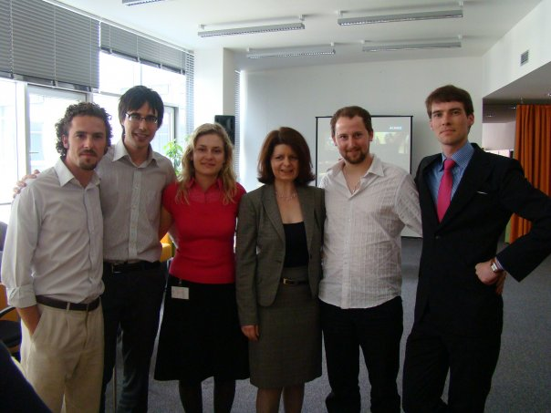
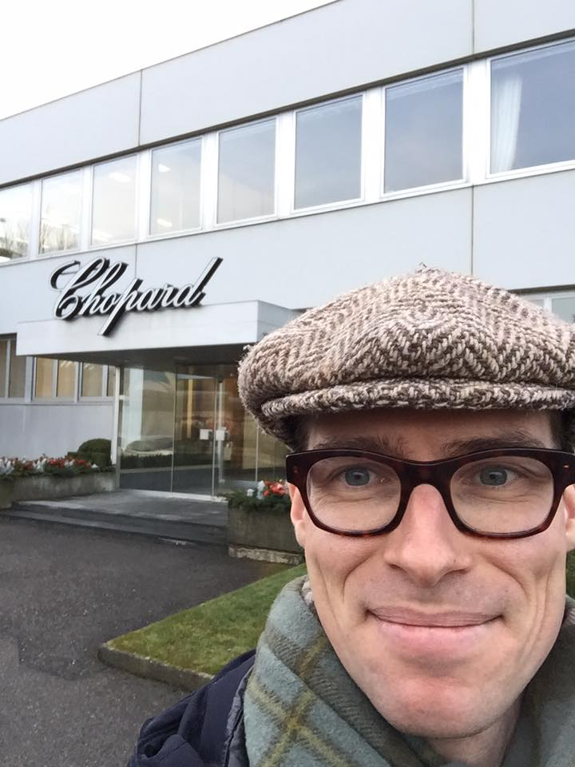
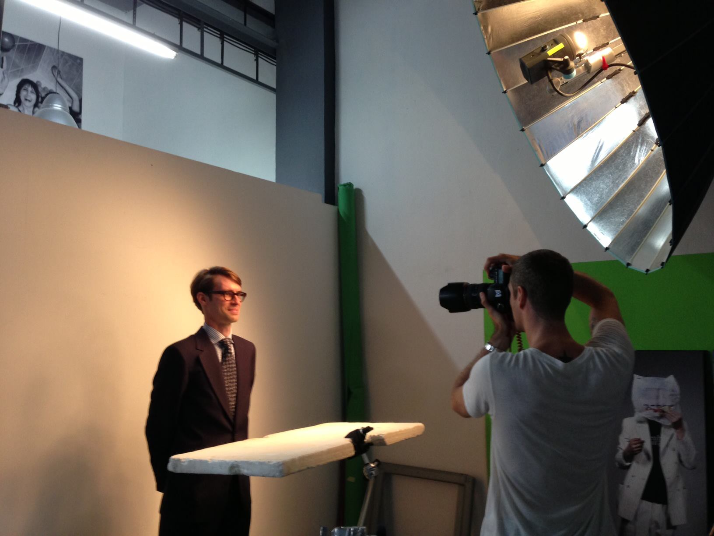
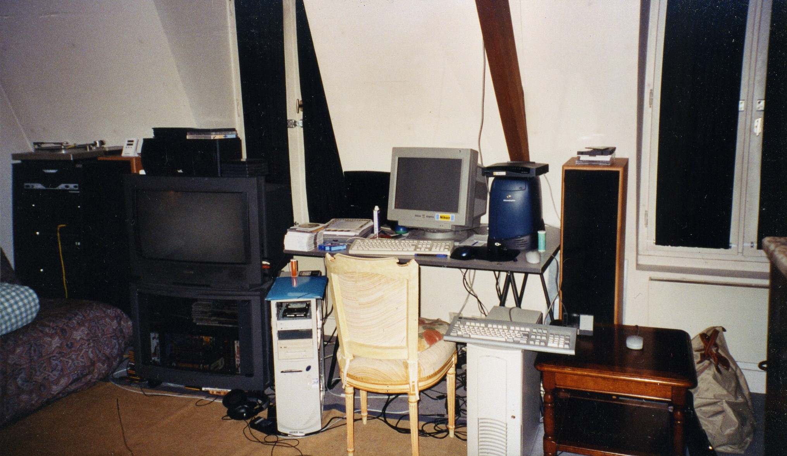
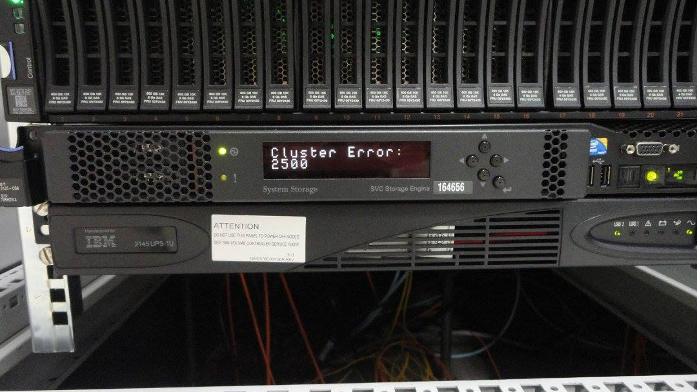
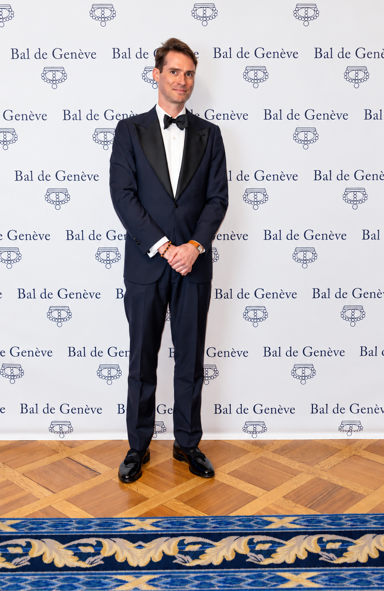
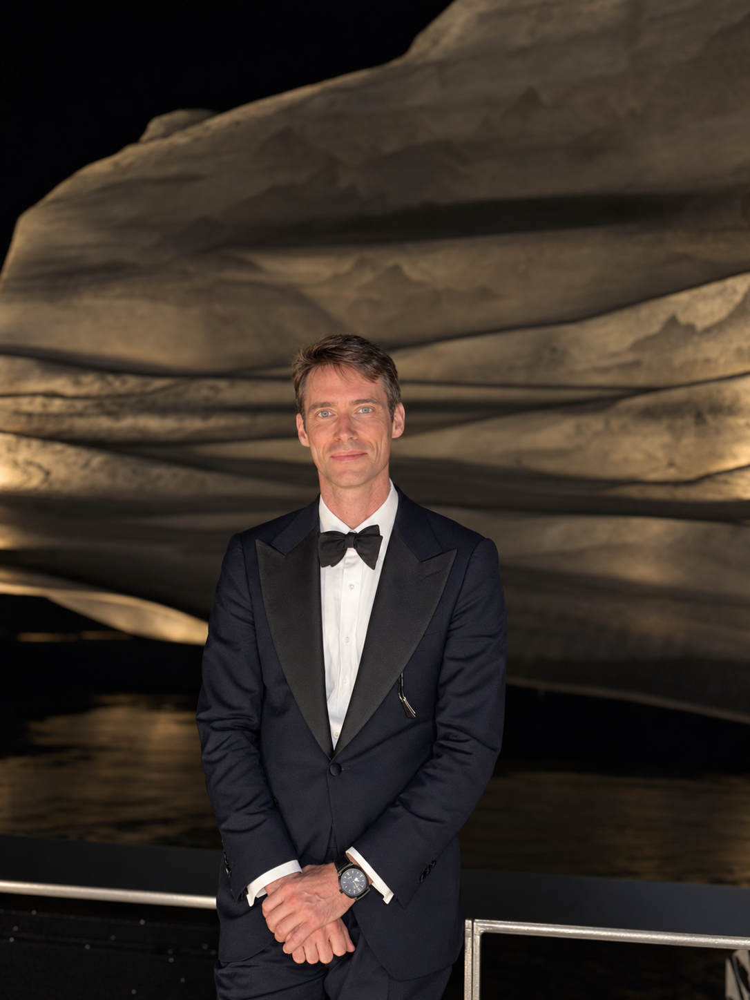
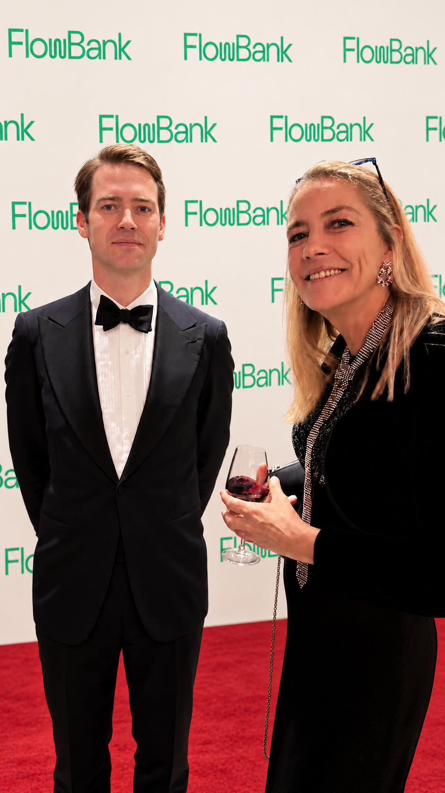

AI Factory & LLMOps
Multi-LLM platforms, AWS Bedrock, OpenAI, Anthropic, RAG, agentic workflows, evaluation, guardrails and observability.

Crissier, Switzerland · Swiss Permit C
AI Infrastructure & Platform Architect
I build AI platforms and the infrastructure behind them. My work spans banking, research computing and large-scale telecoms operations.

Multi-LLM platforms, AWS Bedrock, OpenAI, Anthropic, RAG, agentic workflows, evaluation, guardrails and observability.
NVIDIA DGX and A100, InfiniBand, WEKA, model serving, scientific computing and AI infrastructure operations.
FINMA/EY audit support, nLPD/GDPR-by-design, PII controls, SLA/KPI governance, ITIL and operational risk.
Terraform/IaC, APIs, microservices, cloud and on-premise operations, vendor governance, incident recovery and change leadership.
2025 -
Licorn SA / OriginAI SA · Switzerland
Architected two production AI platforms: multi-LLM services, FastAPI microservices, NVIDIA DGX, AWS Bedrock, Terraform, PII controls and OpenTelemetry/Langfuse observability.
2023 - 2024
FlowBank · Geneva
Led infrastructure and DevOps across five data centers spanning AWS, Azure and on-premise systems. Owned a CHF 8M budget, led a 12-person team and supported recurring FINMA/EY audits.
2022 - 2023
Swiss Institute of Bioinformatics · Lausanne
Led the infrastructure team supporting scientific computing with NVIDIA A100, InfiniBand and WEKA, including service governance, security and research stakeholder delivery.
2008 - 2014
AT&T Global System Hosting · Bratislava
Led 50+ engineers across 16 nationalities on a 40,000-server and 100,000-VDI estate. Led escalation and recovery work during a 160 TB SAN outage in 2013 and contributed to a 100,000-blade-server data-center design. Read the recovery story.
Team leader & escalation manager
On a Sunday in 2013, a 160 TB SAN failed at AT&T. It held VMware virtual disks, database volumes and Unix systems that booted directly from the SAN.
The storage used RAID 0 disk groups beneath a RAID 5 layer. The first failed disk was not replaced promptly. When a second disk failed in a different RAID 0 group, the upper RAID 5 layer lost a second member and the SAN became unavailable. Attempts to recover the array and its snapshots failed. We had to restore the systems.
I was both team leader and escalation manager. Starting Monday, I was on a continuous incident call from 8 a.m. to 6 p.m., with around 100 participants, including VIP stakeholders, while also working on the technical recovery.
In this environment, Avamar covered Windows Server 2008 R2 and newer systems. The bare-metal recovery procedure had never been tested under these conditions. When we tried to restore, I discovered that the Avamar boot ISO was missing the VMware VMXNET3 network driver.
I rebuilt the ISO with the missing driver, then trained the recovery teams: about 50 people in Bratislava, 30 in the United States and 100 in India. The other systems relied on tape backups stored across several US states, which added another recovery path to coordinate.
The recovery operation ran around the clock, from Sunday until Friday at noon, when we restored the last production server.
Later, when I deployed Avamar solutions at NTT, I documented the recovery procedures, supplied clients with boot ISOs containing the necessary drivers, and validated backup and restore with them. I made the restore test part of the deployment.
I also hold a rare specialist certification in Avamar implementation, earned in 2015.
 Specialist - Implementation Engineer, Avamar Version 7.0
Specialist - Implementation Engineer, Avamar Version 7.0
From staff badges to server rooms.








The trading setup didn’t fit in the helicopter. I drove from Geneva to Saint-Tropez to install it so my boss could trade while on holiday.
My first Avamar installation, for an industrial customer in Belgium.
French speakers’ day at Johnson Controls.
A presentation on change and problem management at Spital Wallis.
Another moment from my week in cardiology.
My first day as a sysadmin consultant at Chopard.
Corporate portrait by Peter Spurny.
Studio portrait by Peter Spurny.
Modelling for a magazine. Photo by Peter Spurny.
My Paris apartment during my apprenticeship.
Almost my nickname: cluster2600.

Selected badges, with links to verify each certification.
 NVIDIA Certified Professional: Agentic AI
NVIDIA Certified Professional: Agentic AI
 NVIDIA-Certified Professional: AI Infrastructure
NVIDIA-Certified Professional: AI Infrastructure
 NVIDIA-Certified Associate: Generative AI LLMs
NVIDIA-Certified Associate: Generative AI LLMs
 NVIDIA-Certified Associate: AI Infrastructure and Operations
NVIDIA-Certified Associate: AI Infrastructure and Operations
 Oracle Cloud Infrastructure 2025 Certified Architect Associate
Oracle Cloud Infrastructure 2025 Certified Architect Associate
 Oracle Cloud Infrastructure 2025 Certified Foundations Associate
Oracle Cloud Infrastructure 2025 Certified Foundations Associate
 Oracle Cloud Infrastructure 2025 Certified Generative AI Professional
Oracle Cloud Infrastructure 2025 Certified Generative AI Professional
 Oracle Cloud Infrastructure 2025 Certified AI Foundations Associate
Oracle Cloud Infrastructure 2025 Certified AI Foundations Associate
 Deep Learning using TensorFlow
Deep Learning using TensorFlow
 Fortinet FortiGate 7.4 Operator
Fortinet FortiGate 7.4 Operator
BTS in Information Technology
CESI, France · Bac+2 technical diploma
Papers on AI and courses on the infrastructure behind it.
Social events


